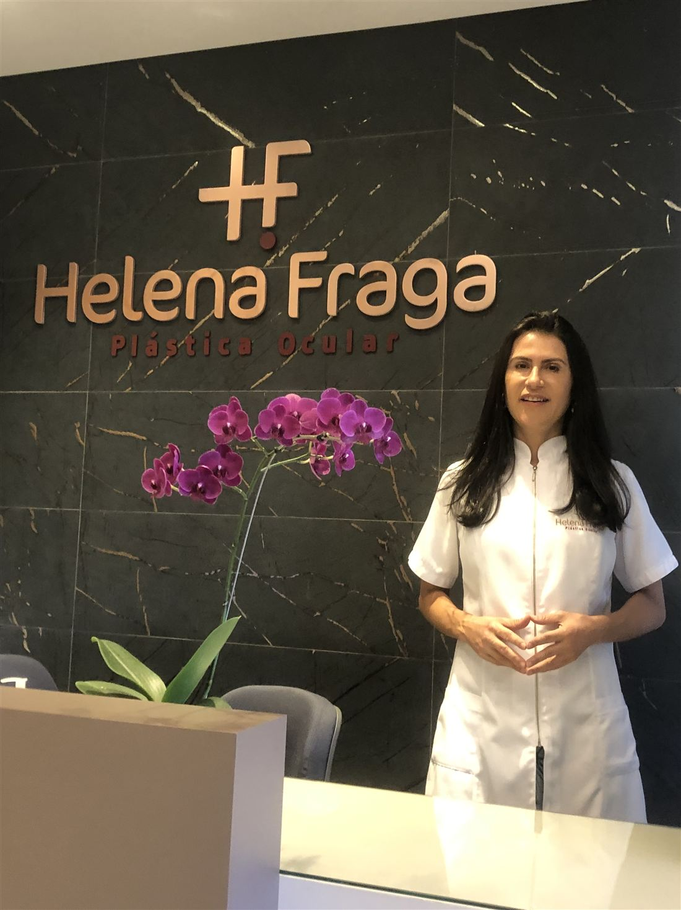
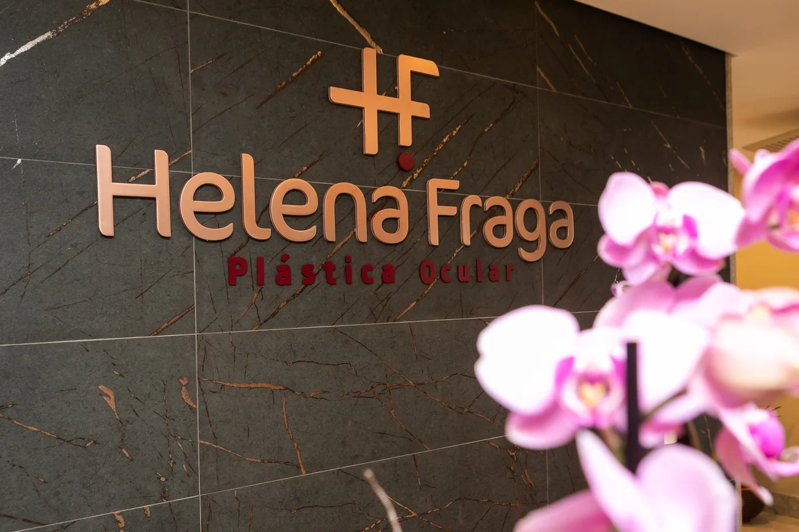
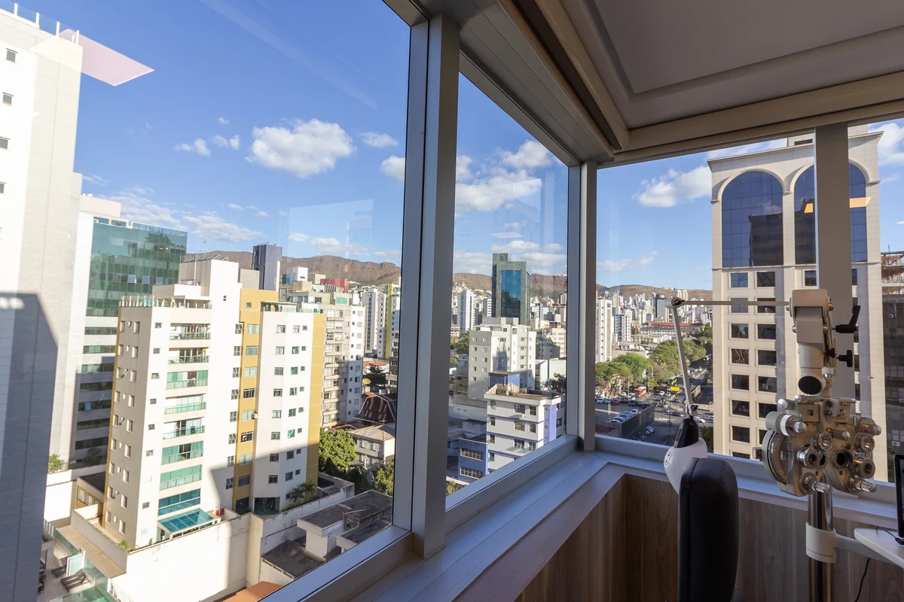

Blefaroplastia · Belo Horizonte
O olhar que você reconhece, descansado.
Cirurgia das pálpebras conduzida por uma oftalmologista especialista em plástica ocular, com acompanhamento próximo do primeiro dia ao resultado final.
Solicitar avaliaçãoAtendimento particular · Savassi
- 20.000+cirurgias
realizadas - 30+anos de
medicina - 90dias de acompanhamento
após a cirurgia
Para quem é
Quando as pálpebras passam a falar por você.
Pálpebras pesadas dão ao rosto uma expressão de cansaço que não corresponde a como a pessoa se sente. A blefaroplastia corrige isso com precisão, preservando o que é seu.
Mulheres e homens. O princípio é o mesmo, o desenho não. Cada rosto pede um plano próprio, que respeite seus traços e a sua expressão.
- i.Excesso de pele nas pálpebras superiores
- ii.Bolsas de gordura sob os olhos
- iii.Aparência constante de cansaço ou sono
- iv.Sensação de peso ou redução do campo de visão
Quem opera
Quem conhece o olho por dentro opera a pálpebra de outro modo.
Sou Helena Fraga, oftalmologista. Há quase três décadas dedico minha prática à plástica ocular: a região onde a estética do rosto e a saúde dos olhos são inseparáveis.
A pálpebra protege, lubrifica e sustenta o olhar. Operá-la bem exige cuidar da forma sem nunca comprometer a função.
- UFMG
- Medicina e residência em Oftalmologia
- Fellowship
- Retina e plástica ocular
- CBO
- Especialista em Oftalmologia
- SBCPO
- Especialista em cirurgia plástica ocular
A cirurgia
Discreta do início ao fim.
Um procedimento breve, em hospital de olhos, planejado para que você volte para casa no mesmo dia.
- DuraçãoUma a duas horas
- AnestesiaLocal com sedação
- InternaçãoNão é necessária
- AltaCerca de uma hora depois
Programa de Assistência Intensiva
O cuidado não termina na sala de cirurgia.
O PAI é o acompanhamento que conduz a sua recuperação por noventa dias, presencialmente e à distância, com toda a equipe da clínica ao seu alcance.
Começa no primeiro dia de pós-operatório, com reavaliações contínuas ao longo do período.
- Equipe multidisciplinar, com fonoaudióloga e enfermeira esteta
- Grupo exclusivo com a equipe para acompanhamento diário
- Drenagens linfáticas faciais
- Laser de baixa potência e fototerapia com LED
- Laserterapia sistêmica (ILIB)
- Uma sessão de plasma rico em plaquetas
O consultório
Na Savassi, com tempo e silêncio.
Um espaço pensado para consultas sem pressa, onde cada etapa acontece com privacidade.



Rua Rio Grande do Norte, 1436, sala 1205 · Savassi · Belo Horizonte
Perguntas frequentes
O que costumam me perguntar na consulta.
A cirurgia dói?
Em geral, não. Costuma haver uma perda transitória de sensibilidade ao redor das incisões, e por isso a dor não é uma queixa habitual.
Vou ficar com inchaço e roxo?
Algum grau é esperado. As bandagens aplicadas logo após o procedimento e o Programa de Assistência Intensiva existem para reduzir esses sinais e encurtar a recuperação.
Quando retomo a rotina?
Atividade física e maquiagem ficam suspensas por trinta dias. As demais orientações são definidas para o seu caso, na consulta.
Meus olhos vão fechar normalmente?
Sim. A blefaroplastia é feita para melhorar a abertura dos olhos sem comprometer o fechamento adequado das pálpebras.
Preciso ficar internado?
Não. Você permanece no hospital de olhos, em média, por cerca de uma hora após o término da cirurgia.
Avaliação
Tudo começa por uma conversa sem pressa.
Na avaliação, examino seus olhos e pálpebras, ouço o que você espera e explico com clareza o que a cirurgia pode fazer por você.
Solicitar avaliação